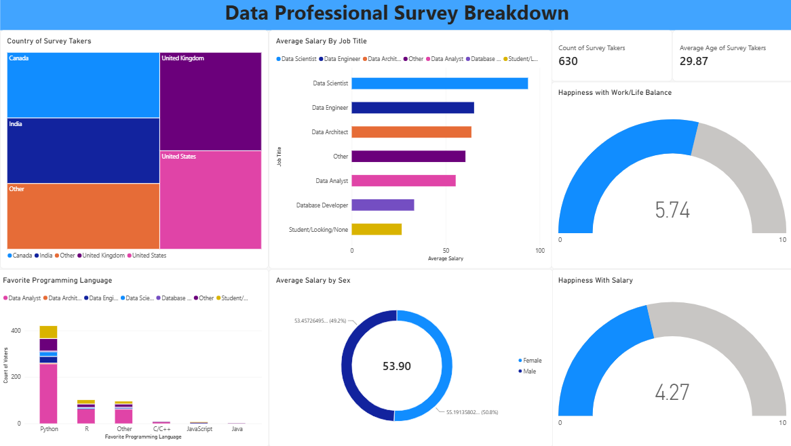

PORTFOLIO
MY CAREER
E-Commerce Sales & Delivery Performance Analysis
- Utilized SQL to clean 100k+ e-commerce order records, joining multi-table datasets to identify regional delivery bottlenecks.
- Built a Star Schema data model in Power BI with DAX measures to track KPIs like Total Revenue, Average Order Value, and target vs. actual.
- Aggregated and visualized the data to reveal top-selling categories and seasonal spending trends.

Telco Customer Churn Analysis
- Cleaned a dataset of 7,000+ customer records using SQL (handling nulls and type casting) and performed initial validation in Excel.
- Segmented customers by contract type and value tier using SQL GROUP BY and HAVING clauses.
- Developed a Power BI dashboard identifying that Month-to-month contracts have a 42% churn rate, providing actionable insights for retention strategies.

Data Analytics Bootcamp Portfolio
- Completed 16 SQL scripts covering advanced concepts including Joins, CTEs, Window Functions, and Stored Procedures.
- Built a Data Professional Survey Dashboard in Power BI to visualize salary trends and programming language preferences.

Python Data Analysis & Web Scraping
- Built foundational Python skills through 20+ notebooks covering core programming, Pandas data manipulation, and web scraping.
- Utilized Pandas for data cleaning, merging, and exploratory data analysis (EDA).
- Developed a practical Amazon Web Scraper to extract product data and save it to a CSV file for tracking.